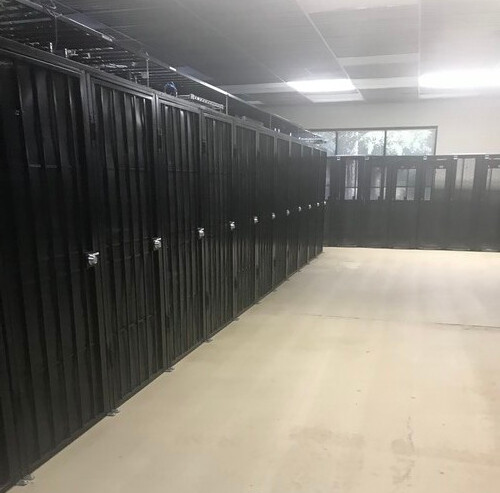
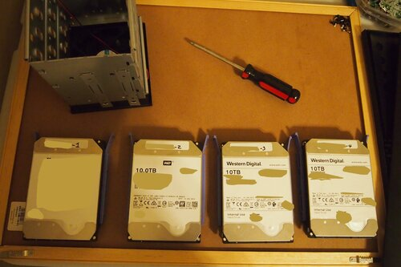
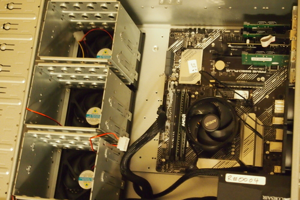
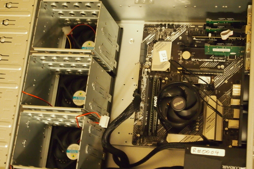

Happy Holidays!
First of all, I want to wish everyone a relaxing winter break.
I am taking a couple weeks off my dayjob to help onboard new users. Response time via email should be less than 24 hours. Feel free to email directly or make post on our GitHub discussion board.
Open-Source
In the spirit of transparency and longevity, we are open-sourcing our software, database schemas, and runbooks.
Commitment to Communication
It has been about two weeks since our last public update. In the mean time, we have on-boarded several users and gathered feedback. From here on out, there will be a weekly update posted on Fridays. In addition, minor status updates may be posted on our Twitter.
API
As we mentioned in our philosophy.txt document, we strive for an API-first system. Everything exposed on our dashboards/graphs can be called directly over JSON over HTTP APIs.
The current API is being fleshed out. But please check out these two endpoints for hypervisor #1:
Similar endpoints exist for user data, (e.g. your own drive temperature stats and bandwidth usage.)
Accounts
In order to simplify our on-boarding process, we have decided to use email-based auth codes for the time being. If you do not have account, simply enter your email in the login dashboard and one will be created for you automatically. A corresponding API key will be created for you automatically.
Hardware Photos
(Hover for captions.)


 

Roadblocks: Software, Hardware, and Logistics
Here are a few roadblocks (and solutions!) we have encountered over the past two weeks.
Hardware Issue #1 - Temperature
Shortly after launch, we assembled a 2x 8TB system in a small 1U chassis to benchmark disk speeds and log temperatures within the datacenter. Unfortunately, cooling was an issue. We did not install any fans directed at the drives. (Note: "m2_drive" refers to "machine-2", not the M.2 device standard.) The cyclical spikes you are seeing correspond to the datacenter's ambient temperature day/night cycle. Next trip, I plan to install some ambient temperature sensors in the rack.
")
These issues have been mitigated with our 4U chassis. In each chassis, we install five pressure-optimized fans in a push-pull configuration. There are three intake fans that push air directly into the drive cages. Each drive is separated by roughly 0.25 inches and the air flows through them, like fins. At the rear of the chassis, two exhaust fans accelerate the airflow.
")
With the new fans and larger chassis, the drive temperatures are in a reasonable range!
These plots are regenerated every 5 minutes. The backend software will be open-sourced generically at: radious-subsystems/metrics. (Note: the repo hasn't been made public yet. But it will be soon!)
Logistics Issue #1 - Processor Stock
It was bad timing to launch a hardware-centric business in the midst of an ongoing silicon shortage.
We pivoted to Intel-based systems instead of AMD in order to meet demand. This has increased our costs slightly, but end-user performance should be roughly the same.Software Issue #1 - CentOS 8.2 Redacts 2029 LTS (Long-Term Support)
In other news, IBM/RedHat have recently dropped their 2029 LTS timeline for CentOS 8.... which is a real bummer. Additionally, their upgrade to CentOS 8.3 broke new OpenZFS 0.8.5 installs. In the interim, we installed ZFS 2.0.0 on several systems and has been working smoothly. The ZFS team has a fairly solid track record of cautious updates and I trust 2.0.0 not to break anything.
Luckily, the OpenZFS devs are quick. Within two weeks, ZFS 0.8.6 now installs on CentOS 8.3 without any additional effort.
Software Issue #2 - DHCP firewalling
This is a royal pain-in-the-ass because of Linux raw sockets. (https://superuser.com/a/1457487)
DHCP requests and responses skip over iptables and ebtables rules. I plan on doing a write-up of our solution in the docs later on. We use DHCP to map static IPs to each VM's mac address. The nice thing about the standard NIC para-virtualization is that it prevents the guests from modifying their mac address.